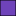

<!doctype html>
<html lang="en">
    <head>
        <meta charset="utf-8">
        <meta http-equiv="X-UA-Compatible" content="IE=edge">
        <meta name="viewport" content="initial-scale=1,user-scalable=no,maximum-scale=1,width=device-width">
        <meta name="mobile-web-app-capable" content="yes">
        <meta name="apple-mobile-web-app-capable" content="yes">
        <link rel="stylesheet" href="css/leaflet.css" />
        <link rel="stylesheet" type="text/css" href="css/qgis2web.css">
        <link rel="stylesheet" href="css/label.css" />
        <link rel="stylesheet" href="css/MarkerCluster.css" />
        <link rel="stylesheet" href="css/MarkerCluster.Default.css" />
        <link rel="stylesheet" href="http://k4r573n.github.io/leaflet-control-osm-geocoder/Control.OSMGeocoder.css" />
        <link rel="stylesheet" href="css/leaflet.draw.css" />
        <link rel="stylesheet" href="css/leaflet.measurecontrol.css" />
        <script src="js/leaflet.js"></script>
        <script src="js/OSMBuildings-Leaflet.js"></script>
        <script src="js/leaflet-hash.js"></script>
        <script src="js/label.js"></script>
        <script src="js/Autolinker.min.js"></script>
        <script src="http://k4r573n.github.io/leaflet-control-osm-geocoder/Control.OSMGeocoder.js"></script>
        <script src="js/leaflet.draw.js"></script>
        <script src="js/leaflet.measurecontrol.js"></script>
        <script src="js/leaflet.markercluster.js"></script>
        <style>
        #map {
            width: 913px;
            height: 723px;
        }
        </style>
        <title></title>
    </head>
    <body>
        <div id="map">
        </div>
        <script src="data/json_hulls60.js"></script>
        <script src="data/json_mapmapPolygon1.js"></script>
        <script src="data/json_mapmapPoint2.js"></script>
        <script>
        var highlightLayer;
        function highlightFeature(e) {
            highlightLayer = e.target;

            if (e.target.feature.geometry.type === 'LineString') {
              highlightLayer.setStyle({
                color: '#ffff00',
              });
            } else {
              highlightLayer.setStyle({
                fillColor: '#ffff00',
                fillOpacity: 1
              });
            }
            highlightLayer.openPopup();
        }
        L.ImageOverlay.include({
            getBounds: function () {
                return this._bounds;
            }
        });
        var map = L.map('map', {
            measureControl:true,
            zoomControl:true, maxZoom:28, minZoom:1
        }).fitBounds([[40.0836452751,-74.9278001577],[40.5318358627,-74.3611725582]]);
        var hash = new L.Hash(map);
        map.attributionControl.addAttribution('<a href="https://github.com/tomchadwin/qgis2web" target="_blank">qgis2web</a>');
        var feature_group = new L.featureGroup([]);
        var bounds_group = new L.featureGroup([]);
        var raster_group = new L.LayerGroup([]);
        var basemap0 = L.tileLayer('http://{s}.tile.openstreetmap.org/{z}/{x}/{y}.png', {
            attribution: '&copy; <a href="http://openstreetmap.org">OpenStreetMap</a> contributors,<a href="http://creativecommons.org/licenses/by-sa/2.0/">CC-BY-SA</a>',
            maxZoom: 28
        });
        basemap0.addTo(map);
        var initialOrder = new Array();
        var layerOrder = new Array();
        function stackLayers() {
            for (index = 0; index < initialOrder.length; index++) {
                map.removeLayer(initialOrder[index]);
                map.addLayer(initialOrder[index]);
            }
        }
        function restackLayers() {
            for (index = 0; index < layerOrder.length; index++) {
                layerOrder[index].bringToFront();
            }
        }
        layerControl = L.control.layers({},{},{collapsed:false});
        function pop_hulls60(feature, layer) {
            layer.on({
                mouseout: function(e) {
                    layer.setStyle(doStylehulls60(feature));

                    if (typeof layer.closePopup == 'function') {
                        layer.closePopup();
                    } else {
                        layer.eachLayer(function(feature){
                            feature.closePopup()
                        });
                    }
                },
                mouseover: highlightFeature,
            });
            var popupContent = '<table><tr><th scope="row">school</th><td>' + (feature.properties['school'] !== null ? Autolinker.link(String(feature.properties['school'])) : '') + '</td></tr></table>';
            layer.bindPopup(popupContent);
        }

        function doStylehulls60(feature) {
            return {
                weight: 1.04,
                color: '#000000',
                fillColor: '#8a1368',
                dashArray: '',
                lineCap: 'square',
                lineJoin: 'bevel',
                opacity: 1.0,
                fillOpacity: 1.0
            };
        }
        var json_hulls60JSON = new L.geoJson(json_hulls60, {
            onEachFeature: pop_hulls60,
            style: doStylehulls60
        });
        layerOrder[layerOrder.length] = json_hulls60JSON;
        bounds_group.addLayer(json_hulls60JSON);
        initialOrder[initialOrder.length] = json_hulls60JSON;
        feature_group.addLayer(json_hulls60JSON);
        function pop_mapmapPolygon1(feature, layer) {
            layer.on({
                mouseout: function(e) {
                    layer.setStyle(doStylemapmapPolygon1(feature));

                    if (typeof layer.closePopup == 'function') {
                        layer.closePopup();
                    } else {
                        layer.eachLayer(function(feature){
                            feature.closePopup()
                        });
                    }
                },
                mouseover: highlightFeature,
            });
            var popupContent = '<table><tr><th scope="row">Name</th><td>' + (feature.properties['Name'] !== null ? Autolinker.link(String(feature.properties['Name'])) : '') + '</td></tr><tr><th scope="row">description</th><td>' + (feature.properties['description'] !== null ? Autolinker.link(String(feature.properties['description'])) : '') + '</td></tr><tr><th scope="row">timestamp</th><td>' + (feature.properties['timestamp'] !== null ? Autolinker.link(String(feature.properties['timestamp'])) : '') + '</td></tr><tr><th scope="row">begin</th><td>' + (feature.properties['begin'] !== null ? Autolinker.link(String(feature.properties['begin'])) : '') + '</td></tr><tr><th scope="row">end</th><td>' + (feature.properties['end'] !== null ? Autolinker.link(String(feature.properties['end'])) : '') + '</td></tr><tr><th scope="row">altitudeMode</th><td>' + (feature.properties['altitudeMode'] !== null ? Autolinker.link(String(feature.properties['altitudeMode'])) : '') + '</td></tr><tr><th scope="row">tessellate</th><td>' + (feature.properties['tessellate'] !== null ? Autolinker.link(String(feature.properties['tessellate'])) : '') + '</td></tr><tr><th scope="row">extrude</th><td>' + (feature.properties['extrude'] !== null ? Autolinker.link(String(feature.properties['extrude'])) : '') + '</td></tr><tr><th scope="row">visibility</th><td>' + (feature.properties['visibility'] !== null ? Autolinker.link(String(feature.properties['visibility'])) : '') + '</td></tr><tr><th scope="row">drawOrder</th><td>' + (feature.properties['drawOrder'] !== null ? Autolinker.link(String(feature.properties['drawOrder'])) : '') + '</td></tr><tr><th scope="row">icon</th><td>' + (feature.properties['icon'] !== null ? Autolinker.link(String(feature.properties['icon'])) : '') + '</td></tr><tr><th scope="row">name</th><td>' + (feature.properties['name'] !== null ? Autolinker.link(String(feature.properties['name'])) : '') + '</td></tr></table>';
            layer.bindPopup(popupContent);
        }

        function doStylemapmapPolygon1(feature) {
            return {
                weight: 1.04,
                color: '#000000',
                fillColor: '#6f43ba',
                dashArray: '',
                lineCap: 'square',
                lineJoin: 'bevel',
                opacity: 1.0,
                fillOpacity: 1.0
            };
        }
        var json_mapmapPolygon1JSON = new L.geoJson(json_mapmapPolygon1, {
            onEachFeature: pop_mapmapPolygon1,
            style: doStylemapmapPolygon1
        });
        layerOrder[layerOrder.length] = json_mapmapPolygon1JSON;
        bounds_group.addLayer(json_mapmapPolygon1JSON);
        initialOrder[initialOrder.length] = json_mapmapPolygon1JSON;
        feature_group.addLayer(json_mapmapPolygon1JSON);
        function pop_mapmapPoint2(feature, layer) {
            layer.on({
                mouseout: function(e) {
                    layer.setStyle(doStylemapmapPoint2(feature));

                    if (typeof layer.closePopup == 'function') {
                        layer.closePopup();
                    } else {
                        layer.eachLayer(function(feature){
                            feature.closePopup()
                        });
                    }
                },
                mouseover: highlightFeature,
            });
            var popupContent = '<table><tr><th scope="row">Name</th><td>' + (feature.properties['Name'] !== null ? Autolinker.link(String(feature.properties['Name'])) : '') + '</td></tr><tr><th scope="row">description</th><td>' + (feature.properties['description'] !== null ? Autolinker.link(String(feature.properties['description'])) : '') + '</td></tr><tr><th scope="row">timestamp</th><td>' + (feature.properties['timestamp'] !== null ? Autolinker.link(String(feature.properties['timestamp'])) : '') + '</td></tr><tr><th scope="row">begin</th><td>' + (feature.properties['begin'] !== null ? Autolinker.link(String(feature.properties['begin'])) : '') + '</td></tr><tr><th scope="row">end</th><td>' + (feature.properties['end'] !== null ? Autolinker.link(String(feature.properties['end'])) : '') + '</td></tr><tr><th scope="row">altitudeMode</th><td>' + (feature.properties['altitudeMode'] !== null ? Autolinker.link(String(feature.properties['altitudeMode'])) : '') + '</td></tr><tr><th scope="row">tessellate</th><td>' + (feature.properties['tessellate'] !== null ? Autolinker.link(String(feature.properties['tessellate'])) : '') + '</td></tr><tr><th scope="row">extrude</th><td>' + (feature.properties['extrude'] !== null ? Autolinker.link(String(feature.properties['extrude'])) : '') + '</td></tr><tr><th scope="row">visibility</th><td>' + (feature.properties['visibility'] !== null ? Autolinker.link(String(feature.properties['visibility'])) : '') + '</td></tr><tr><th scope="row">drawOrder</th><td>' + (feature.properties['drawOrder'] !== null ? Autolinker.link(String(feature.properties['drawOrder'])) : '') + '</td></tr><tr><th scope="row">icon</th><td>' + (feature.properties['icon'] !== null ? Autolinker.link(String(feature.properties['icon'])) : '') + '</td></tr><tr><th scope="row">name</th><td>' + (feature.properties['name'] !== null ? Autolinker.link(String(feature.properties['name'])) : '') + '</td></tr></table>';
            layer.bindPopup(popupContent);
        }

        function doStylemapmapPoint2() {
            return {
                radius: 2.0,
                fillColor: '#b37db2',
                color: '#000000',
                weight: 0.0,
                opacity: 1.0,
                dashArray: '',
                lineCap: 'butt',
                lineJoin: 'miter',
                fillOpacity: 1.0
            }
        }
        function doPointToLayermapmapPoint2(feature, latlng) {
            return L.circleMarker(latlng, doStylemapmapPoint2())
        }
        var json_mapmapPoint2JSON = new L.geoJson(json_mapmapPoint2, {
            onEachFeature: pop_mapmapPoint2, 
            pointToLayer: doPointToLayermapmapPoint2
            });
        layerOrder[layerOrder.length] = json_mapmapPoint2JSON;

        bounds_group.addLayer(json_mapmapPoint2JSON);
        initialOrder[initialOrder.length] = json_mapmapPoint2JSON;
        feature_group.addLayer(json_mapmapPoint2JSON);
        raster_group.addTo(map);
        feature_group.addTo(map);
        var osmGeocoder = new L.Control.OSMGeocoder({
            collapsed: false,
            position: 'topright',
            text: 'Search',
        });
        osmGeocoder.addTo(map);
        var baseMaps = {'OSM': basemap0};
        L.control.layers(baseMaps,{' map map Point': json_mapmapPoint2JSON,' map map Polygon': json_mapmapPolygon1JSON,' hulls6': json_hulls60JSON,},{collapsed:false}).addTo(map);
        map.locate({setView: true, maxZoom: 14});
        function onLocationFound(e) {
            var radius = e.accuracy / 2;
            L.marker(e.latlng).addTo(map)
            .bindPopup("You are within " + radius + " meters from this point")
            .openPopup();
            L.circle(e.latlng, radius).addTo(map);
        }
        map.on('locationfound', onLocationFound);
        L.control.scale({options: {position: 'bottomleft', maxWidth: 100, metric: true, imperial: false, updateWhenIdle: false}}).addTo(map);
        stackLayers();
        map.on('overlayadd', restackLayers);
        </script>
    </body>
</html>
